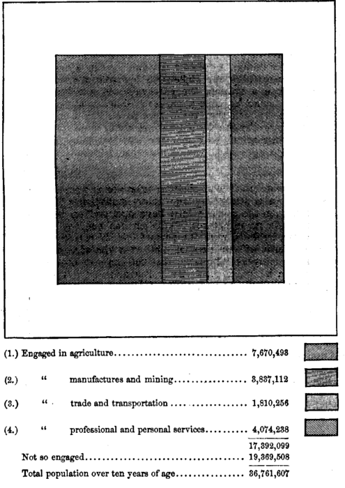

Chapter 48: Of An Interference Of Government Grounded On Erroneous Theories¶
48.1 § 1. The doctrine of Protection to Native Industry¶
We proceed to the functions of government which belong to what I have termed, for want of a better designation, the optional class; those which are sometimes assumed by governments and sometimes not, and which it is not unanimously admitted that they ought to exercise. We will begin by passing in review false theories which have from time to time formed the ground of acts of government more or less economically injurious.
Of these false theories, the most notable is the doctrine of Protection to Native Industry—a phrase meaning the prohibition, or the discouragement by heavy duties, of such foreign commodities as are capable of being produced at home. If the theory involved in this system had been correct, the practical conclusions grounded on it would not have been unreasonable. The theory was that, to buy things produced at home was a national benefit, and the introduction of foreign commodities generally a national loss. It being at the same time evident that the interest of the consumer is to buy foreign commodities in preference to domestic whenever they are either cheaper or better, the interest of the consumer appeared in this respect to be contrary to the public interest; he was certain, if left to his own inclinations, to do what according to the theory was injurious to the public.
It was shown, however, in our analysis of the effects of international trade, as it had been often shown by former writers, that the importation of foreign commodities, in the common course of traffic, never takes place except when it is, economically speaking, a national good, by causing the same amount of commodities to be obtained at a smaller cost of labor and capital to the country. To prohibit, therefore, this importation, or impose duties which prevent it, is to render the labor and capital of the country less efficient in production than they would otherwise be, and compel a waste of the difference between the labor and capital necessary for the home production of the commodity and that which is required for producing the things with which it can be purchased from abroad. The amount of national loss thus occasioned is measured by the excess of the price at which the commodity is produced over that at which it could be imported. In the case of manufactured goods the whole difference between the two prices is absorbed in indemnifying the producers for waste of labor, or of the capital which supports that labor. Those who are supposed to be benefited, namely, the makers of the protected articles (unless they form an exclusive company, and have a monopoly against their own countrymen as well as against foreigners), do not obtain higher profits than other people. All is sheer loss to the country as well as to the consumer.
Of the industries in a country some are said to “need protection” and others not—that is, those industries which are carried on at a relative disadvantage are the only ones which need protection in order that they may continue in operation. By relative disadvantage is meant a greater relative cost, or sacrifice, to the same amount of labor and capital. Those industries which can not yield so great a value for the labor and capital engaged in them as other more profitable industries are those which are said to “need protection.” Wherever protective duties exist it is implied by those who lay them on that there production is carried on under more onerous conditions than in other competing places or occupations. After duties are thus supposed to have protected the less advantageously situated occupations, it may be said that all industries will then have an equal chance. “No doubt,” as Mr. Cairnes says, “they would be equalized just as by compelling every one to move about with a weight attached to his leg. The weight would, indeed, be an impediment to locomotion, but, provided it were in each case exactly proportioned to the strength of the limb which drew it, no one ... would have any reason to complain. No one would walk as fast as if his limbs were free, but then his neighbor would be equally fettered, and, if it took him twice as long to reach his destination as before, he would at least have company on his journey.”1
48.2 § 2. —had its origin in the Mercantile System¶
The restrictive and prohibitory policy was originally grounded on what is called the Mercantile System, which, representing the advantage of foreign trade to consist solely in bringing money into the country, gave artificial encouragement to exportation of goods, and discountenanced their importation. The only exceptions to the system were those required by the system itself. The materials and instruments of production were the subject of a contrary policy, directed, however, to the same end; they were freely imported, and not permitted to be exported, in order that manufacturers, being more cheaply supplied with the requisites of manufacture, might be able to sell cheaper, and therefore to export more largely. For a similar reason importation was allowed and even favored, when confined to the productions of countries which were supposed to take from the country still more than it took from them, thus enriching it by a favorable balance of trade. As part of the same system colonies were founded, for the supposed advantage of compelling them to buy our commodities, or at all events not to buy those of any other country: in return for which restriction we were generally willing to come under an equivalent obligation with respect to the staple productions of the colonists. The consequences of the theory were pushed so far that it was not unusual even to give bounties on exportation, and induce foreigners to buy from [England] rather than from other countries by a cheapness which [England] artificially produced, by paying part of the price for them out of [their] own taxes. This is a stretch beyond the point yet reached by any private tradesman in his competition for business. No shopkeeper, I should think, ever made a practice of bribing customers by selling goods to them at a permanent loss, making it up to himself from other funds in his possession.
The principle of the Mercantile Theory is now given up even by writers and governments who still cling to the restrictive system. Whatever hold that system has over men's minds, independently of the private interests exposed to real or apprehended loss by its abandonment, is derived from fallacies other than the old notion of the benefits of heaping up money in the country. The most effective of these is the specious plea of employing our own countrymen and our national industry, instead of feeding and supporting the industry of foreigners. The answer to this, from the principles laid down in former chapters, is evident. Without reverting to the fundamental theorem discussed in an early part of the present treatise,2 respecting the nature and sources of employment for labor, it is sufficient to say, what has usually been said by the advocates of free trade, that the alternative is not between employing our own people and foreigners, but between employing one class and another of our own people. The imported commodity is always paid for, directly or indirectly, with the produce of our own industry: that industry being, at the same time, rendered more productive, since, with the same labor and outlay, we are enabled to possess ourselves of a greater quantity of the article. Those who have not well considered the subject are apt to suppose that our exporting an equivalent in our own produce, for the foreign articles we consume, depends on contingencies—on the consent of foreign countries to make some corresponding relaxation of their own restrictions, or on the question whether those from whom we buy are induced by that circumstance to buy more from us; and that, if these things, or things equivalent to them, do not happen, the payment must be made in money. Now, in the first place, there is nothing more objectionable in a money payment than in payment by any other medium, if the state of the market makes it the most advantageous remittance; and the money itself was first acquired, and would again be replenished, by the export of an equivalent value of our own products. But, in the next place, a very short interval of paying in money would so lower prices as either to stop a part of the importation, or raise up a foreign demand for our produce, sufficient to pay for the imports. I grant that this disturbance of the equation of international demand would be in some degree to our disadvantage, in the purchase of other imported articles; and that a country which prohibits some foreign commodities, does, cæteris paribus, obtain those which it does not prohibit at a less price than it would otherwise have to pay. To express the same thing in other words: a country which destroys or prevents altogether certain branches of foreign trade, thereby annihilating a general gain to the world, which would be shared in some proportion between itself and other countries, does, in some circumstances, draw to itself, at the expense of foreigners, a larger share than would else belong to it of the gain arising from that portion of its foreign trade which it suffers to subsist. But even this it can only be enabled to do, if foreigners do not maintain equivalent prohibitions or restrictions against its commodities. In any case, the justice or expediency of destroying one of two gains, in order to engross a rather larger share of the other, does not require much discussion; the gain, too, which is destroyed, being, in proportion to the magnitude of the transactions, the larger of the two, since it is the one which capital, left to itself, is supposed to seek by preference.
48.3 § 3. —supported by pleas of national subsistence and national defense¶
Defeated as a general theory, the Protectionist doctrine finds support in some particular cases from considerations which, when really in point, involve greater interests than mere saving of labor—the interests of national subsistence and of national defense.3 The discussions on the Corn Laws have familiarized everybody with the plea that we ought to be independent of foreigners for the food of the people; and the Navigation Laws were grounded, in theory and profession, on the necessity of keeping up a “nursery of seamen” for the navy. On this last subject I at once admit that the object is worth the sacrifice; and that a country exposed to invasion by sea, if it can not otherwise have sufficient ships and sailors of its own to secure the means of manning on an emergency an adequate fleet, is quite right in obtaining those means, even at an economical sacrifice in point of cheapness of transport. When the English navigation laws were enacted, the Dutch, from their maritime skill and their low rate of profit at home, were able to carry for other nations, England included, at cheaper rates than those nations could carry for themselves: which placed all other countries at a great comparative disadvantage in obtaining experienced seamen for their ships of war. The navigation laws, by which this deficiency was remedied, and at the same time a blow struck against the maritime power of a nation with which England was then frequently engaged in hostilities, were probably, though economically disadvantageous, politically expedient. But English ships and sailors can now navigate as cheaply as those of any other country, maintaining at least an equal competition with the other maritime nations even in their own trade. The ends which may once have justified navigation laws require them no longer, and afford no reason for maintaining this invidious exception to the general rule of free trade.
Since the introduction of steamships and the advance of invention in naval contrivances, the plea for navigation laws on the ground that they keep up a “nursery of seamen” for the navy is practically obsolete. The “seaman” employed on the modern naval ships more nearly resembles the artisan in a manufacturing establishment; he need have but comparatively little knowledge of the sea, since the days of sailing-vessels have passed by, so far as naval warfare is concerned. Steam and mechanical appliances now do what was before done by wind and sail.
While Mr. Mill thinks navigation laws were economically—that is, so far as increase of wealth is concerned—disadvantageous, yet he believes that they may have been “politically expedient.” It is possible, for example, that retaliation by the United States and other countries against England early in this century brought about the remission of the English restrictions on foreign shipping. But it is quite another thing to say that such laws produced an ability to sail ships more cheaply. That the English navigation acts of 1651 built up English shipping is not supported by many proofs; whereas it is very distinctly shown that English shipping languished and suffered under them.4 Moreover, under the régime of steam and iron (which drew out England's peculiar advantages in iron and coal), in all its history English shipping never prospered more than it has since the abolition in 1849 of the navigation laws—events which have taken place since Mr. Mill wrote.
The United States is still weighed down by navigation laws adapted to mediæval conditions, and the relics of a time when retaliation was the cause of their enactment. So long as wooden vessels did the carrying-trade, the natural advantages of the United States gave us a proud position on the ocean. Now, however, when it is a question of cheaper iron, steel, and coal for vessels of iron and steel, we are at a possible disadvantage, and the bulk of navigation laws proposed in these days are intended to draw capital either by raising prices through duties on ships and materials, or by outright bounties and subsidies from industries in which we have advantages, to building ships. And until of late no distinction has been made between ship-building and ship-owning (or ship-sailing). Within the last year (1884) many burdens on ship-sailing have been removed; but even when we are permitted to sail ships on equal terms with foreigners, we can not yet build them with as small a cost as England (which is proved by the very demand of the builders of iron vessels for the retention of protective duties), and our laws do not as yet allow us to buy ships abroad and sail them under our own flag.5
With regard to subsistence, the plea of the Protectionists has been so often and so triumphantly met, that it requires little notice here. That country is the most steadily as well as the most abundantly supplied with food which draws its supplies from the largest surface. It is ridiculous to found a general system of policy on so improbable a danger as that of being at war with all the nations of the world at once; or to suppose that, even if inferior at sea, a whole country could be blockaded like a town, or that the growers of food in other countries would not be as anxious not to lose an advantageous market as we should be not to be deprived of their corn.
In countries in which the system of Protection is declining, but not yet wholly given up, such as the United States, a doctrine has come into notice which is a sort of compromise between free trade and restriction, namely, that protection for protection's sake is improper, but that there is nothing objectionable in having as much protection as may incidentally result from a tariff framed solely for revenue. Even in England regret is sometimes expressed that a “moderate fixed duty” was not preserved on corn, on account of the revenue it would yield. Independently, however, of the general impolicy of taxes on the necessaries of life, this doctrine overlooks the fact that revenue is received only on the quantity imported, but that the tax is paid on the entire quantity consumed. To make the public pay much, that the treasury may receive a little, is no eligible mode of obtaining a revenue. In the case of manufactured articles the doctrine involves a palpable inconsistency. The object of the duty as a means of revenue is inconsistent with its affording, even incidentally, any protection. It can only operate as protection in so far as it prevents importation, and to whatever degree it prevents importation it affords no revenue.
48.4 § 4. —on the ground of encouraging young industries; colonial policy¶
The only case in which, on mere principles of political economy, protecting duties can be defensible, is when they are imposed temporarily (especially in a young and rising nation) in hopes of naturalizing a foreign industry, in itself perfectly suitable to the circumstances of the country. The superiority of one country over another in a branch of production often arises only from having begun it sooner. There may be no inherent advantage on one part, or disadvantage on the other, but only a present superiority of acquired skill and experience. A country which has this skill and experience yet to acquire may in other respects be better adapted to the production than those which were earlier in the field; and, besides, it is a just remark of Mr. Rae that nothing has a greater tendency to promote improvements in any branch of production than its trial under a new set of conditions. But it can not be expected that individuals should, at their own risk, or rather to their certain loss, introduce a new manufacture, and bear the burden of carrying it on, until the producers have been educated up to the level of those with whom the processes are traditional. A protecting duty, continued for a reasonable time, will sometimes be the least inconvenient mode in which the nation can tax itself for the support of such an experiment. But the protection should be confined to cases in which there is good ground of assurance that the industry which it fosters will after a time be able to dispense with it; nor should the domestic producers ever be allowed to expect that it will be continued to them beyond the time necessary for a fair trial of what they are capable of accomplishing.
The great difficulty with this proposal is that it introduces (what is inconsistent with Mr. Mill's general system) the Socialistic basis of state-help, instead of self-help. If industries will never support themselves, then, of course, it is a misappropriation of the property of its citizens whenever a government takes a slice by taxation from productive industries and gives it to a less productive one to make up its deficiencies. The only possible theory of protection to young industries is that, if protected for a season, the industries may soon grow strong and stand alone. Mr. Mill never contemplated anything else. But the difficulty is constantly met with, in putting this theory into practice, that the industry, once that it has learned to depend on the help of the state, never reaches a stage when it is willing to give up the assistance of the duties. Dependence on legislation begets a want of self-reliance, and destroys the stimulus to progress and good management. It is said: “There has never been an instance in the history of the country where the representatives of such industries, who have enjoyed protection for a long series of years, have been willing to submit to a reduction of the tariff, or have proposed it. But, on the contrary, their demands for still higher and higher duties are insatiable, and never intermitted.”6 The question of fact, as to whether or not the United States is indebted for its present manufacturing position to protection when our industries were young, seems to be capable of answer, and an answer which shows that protection was imposed generally after the industries got a foothold, and that very little assistance was derived from the duties on imports.7
The following explanation by Mr. Mill8 of the meaning put upon his argument of protection to young industries by those who have applied it to the United States will be of no slight interest:
“The passage has been made use of to show the inapplicability of free trade to the United States, and for similar purpose in the Australian colonies, erroneously in my opinion, but certainly with more plausibility than can be the case in the United States, for Australia really is a new country whose capabilities for carrying on manufactures can not yet be said to have been tested; but the manufacturing parts of the United States—New England and Pennsylvania—are no longer new countries; they have carried on manufactures on a large scale, and with the benefit of high protecting duties, for at least two generations; their operatives have had full time to acquire the manufacturing skill in which those of England had preceded them; there has been ample experience to prove that the alleged inability of their manufactures to compete in the American market with those of Great Britain does not arise merely from the more recent date of their establishment, but from the fact that American labor and capital can, in the present circumstances of America, be employed with greater return, and greater advantage to the national wealth, in the production of other articles. I have never for a moment recommended or countenanced any protecting industry except for the purpose of enabling the protected branch of industry, in a very moderate time, to become independent of protection. That moderate time in the United States has been exceeded, and if the cotton and iron of America still need protection against those of the other hemisphere, it is in my eyes a complete proof that they aught not to have it, and that the longer it is continued the greater the injustice and the waste of national resources will be.”
There is only one part of the protectionist scheme which requires any further notice: its policy toward colonies and foreign dependencies; that of compelling them to trade exclusively with the dominant country. A country which thus secures to itself an extra foreign demand for its commodities, undoubtedly gives itself some advantage in the distribution of the general gains of the commercial world. Since, however, it causes the industry and capital of the colony to be diverted from channels which are proved to be the most productive, inasmuch as they are those into which industry and capital spontaneously tend to flow, there is a loss, on the whole, to the productive powers of the world, and the mother-country does not gain so much as she makes the colony lose. If, therefore, the mother-country refuses to acknowledge any reciprocity of obligations, she imposes a tribute on the colony in an indirect mode, greatly more oppressive and injurious than the direct.
48.5 § 5. —on the ground of high wages¶
The discussion by Mr. Cairnes on the question of wages as affected by the tariff is such that I have quoted it as fully as possible: “The position taken in the United States is that protection is only needed and only asked for where American industry is placed under a disadvantage, as compared with the industry of foreign countries.... The rates of wages measured in money are higher in the United States than in Europe, and, therefore, it is argued, the cost of producing commodities is higher.... The high rates of wages in the United States are not peculiar to any branch of industry, but are universal throughout its whole range. If, therefore, a high rate of wages proves a high cost of production, and a high cost of production proves a need of protection, it follows that the farmers of Illinois and the cotton-planters of the Southern States stand in as much need of fostering legislation as the cotton-spinners of New England or the iron-masters of Pennsylvania! A criterion which leads to such results must, I think, be regarded as sufficiently condemned. The fallacy is, in truth, ... that all industries are not in each country equally favored or disfavored by nature, and have not, therefore, equal need of this protecting care. If American protectionists are not prepared to demand protective duties in favor of the Illinois farmer against the competition of his English rival, they are bound to admit either that a high cost of production is not incompatible with effective competition, or else that a high rate of wages does not prove a high cost of production; and if this is not so in Illinois, then I wish to know why the case should be different in Pennsylvania or in New England. If a high rate of wages in the first of these States be consistent with a low cost of production, why may not a high rate of wages in Pennsylvania be consistent with a low cost of producing coal and iron?
“The rate of wages, whether measured in money or in the real remuneration of the laborer, affords an approximate criterion of the cost of production,9 either of money, or of the commodities that enter into the laborer's real remuneration, but in a sense the inverse of that in which it is understood in the argument under consideration: in other words, a high rate of wages indicates not a high but a low cost of production.10 ... Thus in the United States the rate of wages is high, whether measured in gold or in the most important articles of the laborer's consumption—a fact which proves that the cost of producing gold, as well as that of producing those other commodities, is low in the United States.... I would ask [objectors] to consider what are the true causes of the high remuneration of American industry. It will surely be admitted that, in the last resort, these resolve themselves into the one great fact of its high productive power.... I must, therefore, contend that the high scale of industrial remuneration in America, instead of being evidence of a high cost of production in that country, is distinctly evidence of a low cost of production—of a low cost of production, that is to say, in the first place, of gold, and, in the next, of the commodities which mainly constitute the real wages of labor—a description which embraces at once the most important raw materials of industry and the most important articles of general consumption. As regards commodities not included in this description, the criterion of wages stands in no constant relation of any kind to their cost, and is, therefore, simply irrelevant to the point at issue. And now we may see what this claim for protection to American industry, founded on the high scale of American remuneration, really comes to: it is a demand for special legislative aid in consideration of the possession of special industrial facilities—a complaint, in short, against the exceptional bounty of nature.
“Perhaps I shall here be asked, How, if the case be so—if the high rate of industrial remuneration in America be only evidence of a low cost of production—the fact is to be explained, since fact it undoubtedly is, that the people of the United States are unable to compete in neutral markets, in the sale of certain important wares, with England and other European countries?11 No one will say that the people of New England, New York, and Pennsylvania, are deficient in any industrial qualities possessed by the workmen of any country in the world. How happens it, then, that, enjoying industrial advantages superior to other countries, they are yet unable to hold their own against them in the general markets of commerce? I shall endeavor to meet this objection fairly, and, in the first place, let me state what my contention is with regard to the cost of production in America. I do not contend that it is low in the case of all commodities capable of being produced in the country, but only in that of a large, very important, but still limited group. With regard to commodities lying outside this group, I hold that the rate of wages is simply no evidence as to the cost of their production, one way or the other. But, secondly, I beg the reader to consider what is meant by the alleged ‘inability’ of New England and Pennsylvania to compete, let us say, with Manchester and Sheffield, in the manufacture of calico and cutlery. What it means, and what it only can mean, is that they are unable to do so consistently with obtaining that rate of remuneration on their industry which is current in the United States. If only American laborers and capitalists would be content with the wages and profits current in Great Britain, there is nothing that I know of to prevent them from holding their own in any markets to which Manchester and Sheffield can send their wares. And this brings us to the heart of the question. Over a large portion of the great field of industry the people of the United States enjoy, as compared with those of Europe, (1) advantages of a very exceptional kind; over the rest (2) the advantage is less decided, or (3) they stand on a par with Europeans, or (4) possibly they are, in some instances, at a disadvantage. Engaging in the branches of industry in which their advantage over Europe is great, they reap industrial returns proportionally great; and, so long as they confine themselves to these occupations, they can compete in neutral markets against all the world, and still secure the high rewards accruing from their exceptionally rich resources. But the people of the Union decline to confine themselves within these liberal bounds. They would cover the whole domain of industrial activity, and think it hard that they should not reap the same rich harvests from every part of the field. They must descend into the arena with Sheffield and Manchester, and yet secure the rewards of Chicago and St. Louis. They must employ European conditions of production, and obtain American results. What is this but to quarrel with the laws of nature? These laws have assigned to an extensive range of industries carried on in the United States a high scale of return, far in excess of what Europe can command, to a few others a return on a scale not exceeding the European proportion. American enterprise would engage in all departments alike, and obtain upon all the high rewards which nature has assigned only to some. Here we find the real meaning of the ‘inability’ of Americans to compete with the ‘pauper labor’ of Europe. They can not do so, and at the same time secure the American rate of return on their work. The inability no doubt exists, but it is one created, not by the drawbacks, but by the exceptional advantages of their position. It is as if a skilled artisan should complain that he could not compete with the hedger and ditcher. Let him only be content with the hedger and ditcher's rate of pay, and there will be nothing to prevent him from entering the lists even against this rival.”12
It is often said that wages are kept at a high rate in the United States by the existence of protected industries. On the other hand, the truth is that the protected industries must pay the current high rate of wages fixed by the general productiveness of all industries in the country. When the facts are investigated, it is surprising how small a portion of the laborers of the United States are employed in occupations which owe their existence to the tariff. A general view of the relative numbers engaged in different occupations may be seen by reference to Chart No. XXIV, based on the returns for the census of 1880. The data are well worth examination:13
| (1.) Agriculture | 7,670,493 |
|---|---|
| (2.) Manufacturing, mechanical, and mining | 3,837,112 |
| (3.) Trade and transportation | 1,810,256 |
| (4.) Professional and personal services | 4,074,238 |
| All occupations | 17,392,099 |

Of the second class, less than 450,000 work-people are engaged in the chief protected industries—cotton, woolen, and iron and steel, combined. This class, it is to be noted, in the census returns, includes bakers, blacksmiths, brick-makers, builders, butchers, cabinet-makers, carpenters, carriage-makers, and so on through the whole list of similar occupations practically unaffected by the tariff (so far as protection to them is concerned). So that, at the most, there are less than a million laborers engaged in industries directly dependent on the tariff, and the number is undoubtedly very much less than a million. When some writers assert, therefore, that the existence of customs-duties allows industries (even including all those employed in producing cotton, wool, iron, and steel) to employ less than a million laborers in such a way that the remuneration is fixed for the remaining 16,000,000 laborers in the United States, keeping wages high for 16,000,000 by paying current wages for less than a million, the extravagance and ignorance of the statement are at once apparent; while, on the other hand, it is distinctly seen that the causes fixing the generally high rates of wages for the 16,000,000 are those governing the majority of occupations, and that the less than one million must be paid the wages which can be obtained elsewhere in the more productive industries. The facts thus strikingly bear out the principles as stated above.
Confirmation—if confirmation now seems necessary—may be found in a study14 by our ablest statistician, Francis A. Walker, upon the causes which have operated on the growth of American manufactures. This growth has not been commensurate, he finds, with the remarkable inventive and industrial capacity of our people, and with the richness of our national resources: “I answer that the cause of that comparative failure is found, primarily and principally, in the extraordinary success of our agriculture, as already intimated in what has been said of the investment of capital. The enormous profits of cultivating a virgin soil without the need of artificial fertilization; the advantages which a sparse population derives from the privilege of selecting for tillage only the choicest spots,15 those most accessible, most fertile, most easily brought under the plow; and the consequent abundance of food and other necessaries enjoyed by the agricultural class, have tended continually to disparage mechanical industries, in the eyes alike of the capitalist, looking to the most remunerative investment of his savings, and of the laborer, seeking that avocation which should promise the most liberal and constant support.
“It has been the competition of the farm with the shop which, throughout the entire century of our national independence, has most effectually hindered the growth of manufactures. A people who are privileged to cultivate a reasonably fertile soil, under the conditions indicated above, can secure for themselves subsistence up to the highest limit of physical well-being. If that people possess the added advantage of great skill in the use of tools, and great adroitness in meeting the large and the little exigencies of the occupation and cultivation of the soil, the fruits of their labor will include not only everything which is essential to health and comfort, but much that is of the nature of luxury.”
It remains to be said in this connection that workmen are already discerning the practical and real causes at work affecting their wages—affecting them more directly than any tariff system possibly could—by showing no small alarm at the immigration of foreigners, such as the Hungarian miners and Italian laborers, who willingly underbid them. In other words, they are beginning to realize, in a practical way, the truth that increasing numbers are far more potent than anything else in reducing wages. So long as immigration is free to any race or nationality, there is no such thing as “protection to home laborers”; the only protection to them—not that I am urging the desirability of such measures—can come solely from forces which limit the number of workmen who enter into competition with them. Any other protection to laboring-men than the prohibition of immigration—which no one thinks of (except for the Chinese)—is an economic delusion. Instead of “protecting” them to the extent of affording higher wages, the tariff increases the cost of woolen clothing and other articles of their consumption, in addition to forcing capital into employments which yield a less return, and so insure lower wages.
48.6 § 6. —on the ground of creating a diversity of industries¶
It must be kept in mind that Political Economy deals only with the phenomena of material wealth; it does not supply ethical or political grounds of action. It is quite conceivable that a legislator, in coming to a decision, may have to balance economic gains against moral or political losses, and may choose to give up the former to prevent the latter. But the economic truth remains unchanged. Political economy, for instance, to the question, Is there any gain in international trade? answers, unequivocally, yes. Would it be a loss of wealth to the community to have the goods formerly bought abroad now produced at home? The answer is, certainly it would. But here it has been ably urged by intelligent writers that a state has other ends to gain than the accumulation of mere riches; that it must aim to secure the greatest moral, social, and elevating influences possible for the working-classes; and that while free exchange of goods may add to wealth, it may injure the social and political well-being of a nation. So far as these are social and political questions they do not belong to Political Economy. But the commonest form of argument is that, under free exchange, the United States would become purely an “agricultural” country, its social horizon would become narrowed, and a lower standard of industrial activity would then ensue; instead of which, it is said, we should, by protection, keep in existence diversified industries by which the national mind may be better stimulated, and greater enterprise may be encouraged in all branches of industry. This argument for “diversity of industries,” however, is not merely a sociological question; it can only be fully discussed from an economic stand-point, and deserves even more than the brief attention we can give it here.
In the first place, as soon as any purely agricultural country gains even a slight density of population—a density only such as to warrant the introduction of the principle of division of labor—there comes an inevitable differentiation of pursuits, wholly outside of legislation, and through the operation of natural causes. Not all of any population is required in agriculture to provide the whole with food. By a division of labor, one man in agriculture can produce the sustenance of himself and many others. “The United States have at the present time but five persons engaged in agriculture for each square mile of settled area.” By the side of the farm must early spring up a wide circle of industries—the shoemaker, the carpenter, the blacksmith, the wagon-maker, the painter, the builder, the mason, and all the ordinary employments which arise in any small community from the earliest division of labor. Moreover, “agriculture” is often used in a too limited sense as confined to producing food alone (although even in that limited sense employing nearly one half of the total number of our laborers). In a new country the natural field of employment is found in the “extractive industries,” which include the preparation for the market not only of food, but also of all ores, coal, minerals, oils, hides, leather, wool, lumber, and the industries intimately connected with them; all the employments which transport these from one part of the country to another (employing at present over one ninth of all our laborers); and professional and personal services of an extended variety. Even, therefore, if we were obliged to forego manufactures entirely, the “extractive industries” would necessarily involve a very extensive diversity of employments.
The real question, however, for most persons, centers in the next stage of the industrial evolution—that of the manufactures of these above-mentioned products of the “extractive industries.” It will be remembered, here, that a country does not possess an equal ability in producing each of these or any commodities: the timber formerly near great rivers may vanish into the interior; the oil-sources may be more or less fertile; or the ore-deposits may be more or less rich, more or less accessible, than those of other countries. This being understood, then, as soon as the demand in the country calls for an increased quantity of a particular article, the cost may increase under the law of diminishing returns until a foreign country—having inferior agents of production as compared with our best—may be able to send supplies into our markets. It all depends on whether the United States wants more articles than can be produced on grades of natural agents superior to those possessed by foreigners, taking cost of carriage to this country into consideration. Even though foreign competition appears when we reach poorer grades of natural agents, it does not follow that some of the particular articles will not be produced. What ought to be clear is, that untrammeled exchange between countries will not prevent the existence of various industries, but only limit production to those grades of agents which are its best. This may be better seen by a simple diagram:
| Iron and Coal: England | 7 | 6 | 5 | 4 | 3 | 2 | 1 |
|---|---|---|---|---|---|---|---|
| Iron and Coal: United States | 4 | 3 | 2 | 1 | |||
| Wheat: England | 4 | 3 | 2 | 1 | |||
| Wheat: United States | 7 | 6 | 5 | 4 | 3 | 2 | 1 |
England may have seven different grades of productiveness in her iron and coal supplies, of which her grades 1, 2, and 3 are superior to the best grade of the United States, while grades 1, 2, 3, and 4 in the United States may compare only with grades 4, 5, 6, 7 of England. So long as England can supply herself and the United States also with coal and iron from the three superior grades, the United States can not work grade 1 at home. But if the supply for England and the world requires grade 5 to be worked, then the United States can begin the industry on her best grade, although that is far inferior to the best grade in England. Likewise, if the United States has three grades of wheat-land superior to England's best grade, the ability of England to grow wheat depends on whether the United States can, or can not, supply both herself and England from grades 1, 2, and 3. If we must resort to grade 4, then England can begin to grow wheat as well as we. In short, under a system of free exchange, as great a diversity as under protection is probably possible, but only in such a way that the best possible advantages in each particular industry are employed. Smaller amounts in some branches, and greater amounts in others, may be produced under a free than under a restrictive system, but with all the greater gain which arises from a proper and healthy adjustment of trade. The most poorly endowed enterprises in each occupation would be given up, but not the whole industry itself. No class of persons feel the competition of rivals more than English farmers since American wheat has come into English markets, and yet it does not follow that England can not grow a bushel of wheat. The fact is, merely, that some kinds of lands were thrown out of cultivation, and a readjustment made, to the benefit of those wanting cheaper food. So with us: we should not, by the free exchange, be forced to give up the iron and coal industries entirely; for the best mines would still keep that occupation in existence to “diversify” the others.
So far the explanation covers the “extractive industries” only, or those industries affected by the law of diminishing returns when a larger quantity is demanded. The real question arises as to the manufactures of these materials. But we count upon larger industrial rewards, in the form of wages, and profits, here than in England; we must get more from an industry than England in order to satisfy us. Our grades of occupations, therefore, must be more productive to a certain extent, grade for grade, than English grades, in order to allow of their remaining free from competition. But we have this superiority, as regards our home market, owing to natural causes: (1) cheap raw materials (if we except wool and other commodities whose price is raised by the tariff); (2) advantage over England in cost of transportation of raw products; and (3) in the cost of transportation, again, of the finished goods in reaching our markets. Now, the processes of manufacture which do not put much labor upon the materials, especially where the articles are bulky, are conducted in this country without fear of foreign competition. And the range of this class of manufactures is surprisingly large. It includes the manufactures of iron, such as stoves, and the common utensils of every-day life; of hides, such as leather, harnesses, etc.; and of wood, such as all the furniture of common use. The list is too long to be fully stated here. These industries are not kept in existence by the tariff; and a diversity as wide as this would arise under a system of free exchange, as well as of restriction. Indeed, if duties were removed from so-called “raw materials,” it is altogether probable that a wider diversity would exist than ever before.
And yet, it will be said, there are some things we can not produce in free competition with England. Of course there are; and it is to be hoped it will long continue so. If there are not some kinds of commodities which foreigners can produce to better advantage than we, then there will be no possibility of any foreign trade whatever; since, if they can send us nothing, they can take nothing from us. To deny this position, is to say that the export and import trade of the United States (amounting in 1883 to more than $1,500,000,000) is of no profit, and had best be entirely destroyed, in order that a few industries in which we have no natural advantages (and which employ less than one seventeenth of the laborers in the United States) should be continued at a loss to the general productiveness of our labor and capital, and so to a general diminution of wages and profits.
48.7 § 7. —on the ground that it lowers prices¶
The argument—heard less frequently now than formerly—has been advanced, drawn inductively from statistics, that protection does not raise prices; because, after duties are put on, a larger quantity is produced, the advantages of large production are reaped, and then the price of the manufactured commodity falls lower here than it was before the duty was imposed. The position is then held that protection does not raise prices. It is, of course, understood to mean the prices of protected commodities—a necessary precaution, because we find our own agricultural (unprotected) commodities cited to show that prices are lower here than in England.
No one, however, will deny that there has been a fall in the prices of textile fabrics and manufactured goods. That is the result of a general law of value, and of the tendencies of a progressive state of industry.16 The causes of this acknowledged fall would be at work, no matter whether tariffs existed or not. It is the result of the general forward march of improvements, as evidenced in the application of new inventions and the display of skill and ingenuity in new processes. To say that it comes because of a tariff, is a complete non sequitur. How true this is may be seen by observing that a country like England, without tariffs, shares in the general fall of prices of manufactured goods equally with the country which has heavy customs-duties. The causes must be wider than tariffs, if they are seen working alike in tariff and non-tariff countries.
But the fact itself can not be gainsaid that protection does raise the prices of the protected goods in the home market. The comparison is not to be made between prices as they now are in this country and as they were twenty or forty years ago also in this country, for this would show only the general march of improvements in this country; but a comparison is to be made between prices in this country to-day and present prices in foreign countries. Does, for instance, the tariff increase the price of woolen goods and clothing to every consumer far beyond what the price would be if the duty on imported woolens were removed? The very existence of a protecting duty is the answer to this. If the duty does not raise the price, then why does the woolen industry wish a continuance of the duties? If goods can be sold as cheaply here as the foreign goods, why do protectionists want any duties? The duties are intended to keep foreign goods out of our markets; and they would be unnecessary if our goods could be sold as cheaply as the foreign wares.
The facts, however, are at hand to show that the statement of principle as made above is corroborated by the statistics. In 1883, although average weekly wages in Massachusetts were over 77 per cent higher than in England, the American laborer had to pay more for the articles entering into his real wages; and to that extent lost the advantage of his higher reward in this country. This is to be seen in the following figures,17 which show, in percentages, whether prices are higher or lower here than in England:
| Classes of Articles. | Higher Percent. | Lower Percent. |
|---|---|---|
| Groceries | 16 | |
| Provisions, including meat, eggs, butter, and potatoes | 23 | |
| Dry goods (all grades) | 13 | |
| Boots, shoes, and slippers | 62 | |
| Clothing | 45 |
And yet, in spite of the high prices, 31 per cent of the Massachusetts workman's expenditure represents more comfort and better home surroundings than is enjoyed by the English workman. If the American could purchase at English prices, he would have no less than 37 per cent of a surplus for additional enjoyments (after making due allowance for the higher rents paid here than in England). In other words, higher prices cut off the American laborer from reaping all the superiority in comfort which might be expected from knowing that he had an advantage over the English laborer of 77 per cent in the money wages received.
In order that the reader may easily find the arguments of the protectionists, he is referred to the following books:
Carey's “Principles of Social Science” (3 vols.). The form of argument is, briefly, that all industries should be kept going within the bounds of a country so as to avoid foreign trade. The change of form into the finished commodity should, he holds, take place near the spot where the raw materials are produced, so that not so great a share should go to the mere middle-men, or transporters.
Bowen's “Political Economy,” Chap. XX, advocates protection on the ground that it is needed to secure diversity of industries, and that it lowers the prices of imported goods.
Sir J. B. Byles's “Sophisms of Free Trade” is an answer to Bastiat's “Sophisms of Protection,” the latter having been translated into English by Horace White.
Erastus B. Bigelow's “The Tariff Question.” This is one of the ablest discussions, from the protectionist point of view, based on statistical tables and comparisons of the policy of England and the United States.
Stebbins's “Protectionists' Manual” is a brief and handy statement.
Ellis H. Roberts's “Government Revenue” is the form into which he has thrown his lectures at Cornell University (1884) on protection, and is the latest statement emanating from that side of the discussion. He goes at length into the history of taxes in various countries; holds that wages are higher here than in England because of protection; that our manufactures are more flourishing than our agriculture, etc.
Frederick List's “National Economy” is the German statement of protection, much on Carey's own grounds.
“The Congressional Globe” contains numerous speeches of members of Congress on the tariff; and the Iron and Steel Association of Philadelphia send out pamphlets explaining the protectionist position.
The free-trade arguments may be found also in W. M. Grosvenor's “Does Protection Protect?” He studies the results of the various tariffs of the United States, and gives many very valuable tables and collections of statistics bearing upon this question.
W. G. Sumner's “History of Protection in the United States” is a very vigorous account of the evils of the various tariffs and the protective system.
D. A. Wells's “Reports” as Special Commissioner of the Revenue, and his numerous pamphlets (see Putnams' publisher's catalogue), are full of facts, and give the results of special study of the subject as affecting the United States.
A. L. Perry's “Political Economy” gives a radical free-trade view.
Henry Fawcett's “Free Trade and Protection” explains the causes which have retarded the more general adoption of free trade.
J. E. Cairnes's “Leading Principles of Political Economy” gives the ablest discussion of the economic principles involved in the question which has yet been offered to the reader. Moreover, almost all our systematic writers on political economy (excepting, perhaps, Bowen and R. E. Thompson) give the system of free exchange their support on economic grounds.
-
Cairnes, “Leading Principles,” pp. 381, 382. ↩
-
Book I, Chap. IV. ↩
-
Mr. Mill here takes up political considerations, which are not properly to be included in a purely economic treatment. (See the beginning of § 6.) ↩
-
See “Sketch of the History of Political Economy,” supra, p. , note 1. ↩
-
For bibliography of the United States shipping question, see Appendix I. ↩
-
D. A. Wells, “Cobden Club Essays,” second series, p. 533. ↩
-
See F. W. Taussig's “Protection to Young Industries as applied in the United States” (1883). ↩
-
In a letter written February 26, 1866, to Mr. Horace White, published in the Chicago “Tribune,” and reprinted in the New York “Nation,” May 29, 1873. ↩
-
Business men constantly use the term “cost of production” when in reality they mean that which to the economist is expressed by “cost of labor.” If cost of labor becomes higher, it takes from profits—the place where they feel the difficulties of competition—but they say that the cost of production has risen: the cost, to them, only has risen, that is, the “cost of labor,” not “cost of production.” ↩
-
Cf. Cairnes, “Leading Principles,” pp. 324-341; and supra, Book III, Chap. II, § 4. ↩
-
The fact (sufficiently established by Mr. Brassey) is not considered also that England gives higher wages to operatives than the Continent, and yet England is able to undersell France and Germany in neutral markets. It is evident, however, that England can undersell only in occupations in which she has advantages. ↩
-
Cairnes, “Leading Principles,” pp. 382-388. ↩
-
“Compendium,” 1880, pp. 1343-1377. ↩
-
“Princeton Review,” 1883, p. 222. ↩
-
The United States have at the present time but five persons engaged in agriculture for each square mile of settled area. ↩
-
Book IV, Chap. I, § 2. ↩
-
“Fifteenth Annual Report of the Massachusetts Bureau of Statistics, 1884,” by Carroll D. Wright. ↩